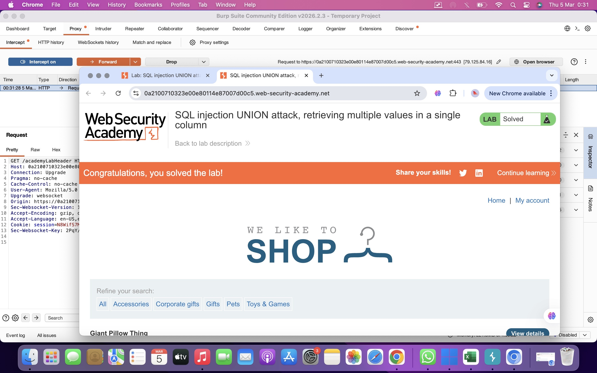

SQL injection with filter bypass via XML encoding
El objetivo de este laboratorio es explotar una vulnerabilidad de SQL Injection en una funcionalidad que utiliza datos enviados en formato XML.
La aplicación contiene una tabla users que almacena los nombres de usuario y contraseñas de los usuarios registrados.
El objetivo final es recuperar las credenciales del usuario administrator utilizando un ataque UNION y posteriormente iniciar sesión en la aplicación.
La funcionalidad vulnerable es la verificación de stock de productos. Esta funcionalidad envía los parámetros productId y storeId al servidor utilizando formato XML.
La aplicación evalúa directamente el valor de storeId dentro de una consulta SQL, lo que permite realizar una inyección SQL.
Sin embargo, existe un filtro de seguridad (WAF) que bloquea consultas sospechosas. Para evadir este filtro se utilizan entidades XML que permiten ofuscar el payload.
Consulta para recuperar usuarios y contraseñas:
Payload codificado en entidades XML para evadir el filtro:
Primero se interceptó la solicitud POST enviada a la ruta /product/stock utilizando Burp Suite.
Después se comprobó que el valor de storeId era evaluado por el servidor realizando operaciones matemáticas simples.
Posteriormente se intentó ejecutar una consulta UNION para recuperar datos de otras tablas, pero la aplicación bloqueó el intento debido al filtro de seguridad.
Para evadir este filtro se utilizó codificación mediante entidades XML, lo que permitió enviar el payload sin ser detectado por el WAF.
Finalmente se recuperaron los nombres de usuario y contraseñas de la tabla users.
La respuesta del servidor mostró las credenciales de los usuarios almacenados en la base de datos.
Con esta información fue posible obtener la contraseña del usuario administrator e iniciar sesión correctamente en la aplicación.
Una vez iniciada la sesión, el laboratorio quedó resuelto.
